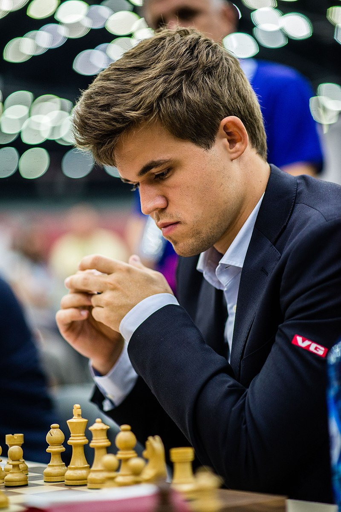

World Chess Championship🌏
The World Chess Championship is played to determine the world champion in chess. The current world champion is Magnus Carlsen of Norway.
The first generally recognized world championship took place in 1886, when the two leading players in the world, Wilhelm Steinitz and Johannes Zukertort, played a match, which was won by Steinitz. From 1886 to 1946, the champion set the terms, requiring any challenger to raise a sizable stake and defeat the champion in a match in order to become the new world champion. Following the death of reigning world champion Alexander Alekhine in 1946, FIDE (the International Chess Federation) took over administration of the World Championship, organizing their first championship in a 1948 tournament. In 1993, reigning champion Garry Kasparov broke away from FIDE, which led to a rival claimant to the title of World Champion for the next thirteen years. The titles were unified at the World Chess Championship 2006, with the unified title again administered by FIDE.

Since 2014, the schedule has settled on a two-year cycle with a championship held in every even year. Magnus Carlsen has been world champion since he defeated Viswanathan Anand in 2013. He successfully defended the title in 2014, 2016, and 2018. The next world championship match has been postponed from 2020 to 2021 due to the COVID-19 pandemic.
Though the world championship is open to all players, there are separate events and titles for the Women's World Chess Championship, the World Junior Chess Championship (for players under 20 years of age, though there are younger age events also), and the World Senior Chess Championship (for men above 60 years of age, and women above 50). There are also faster time limit events, the World Rapid Chess Championship and the World Blitz Chess Championship. The World Computer Chess Championship is open to computer chess programs and hardware.